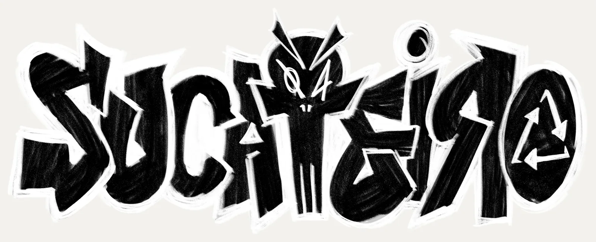
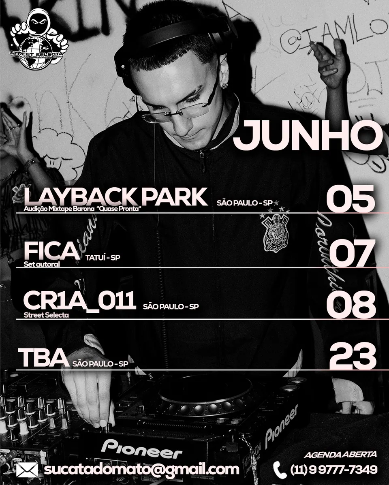
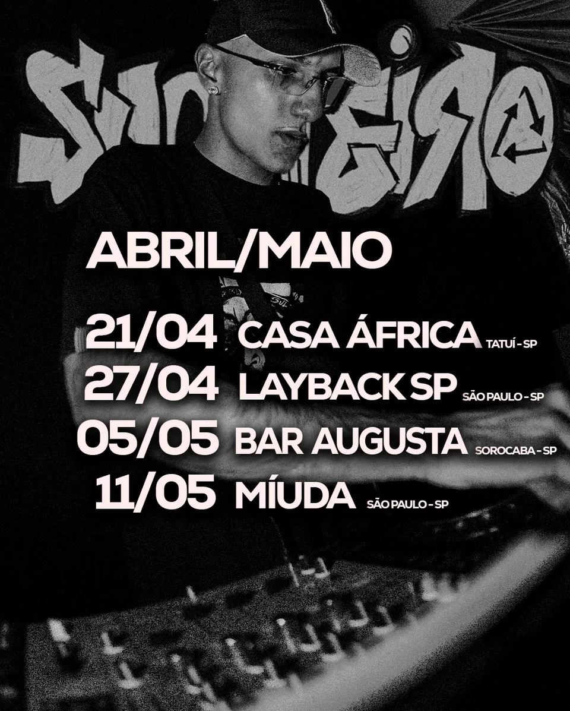
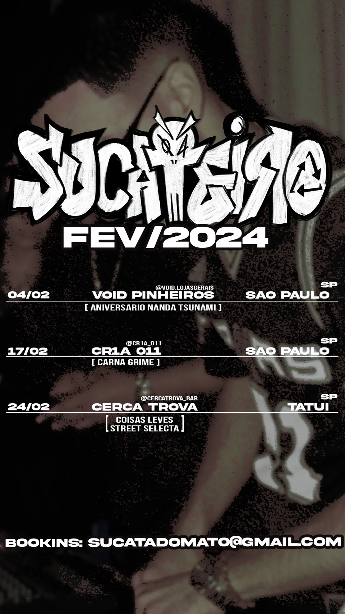
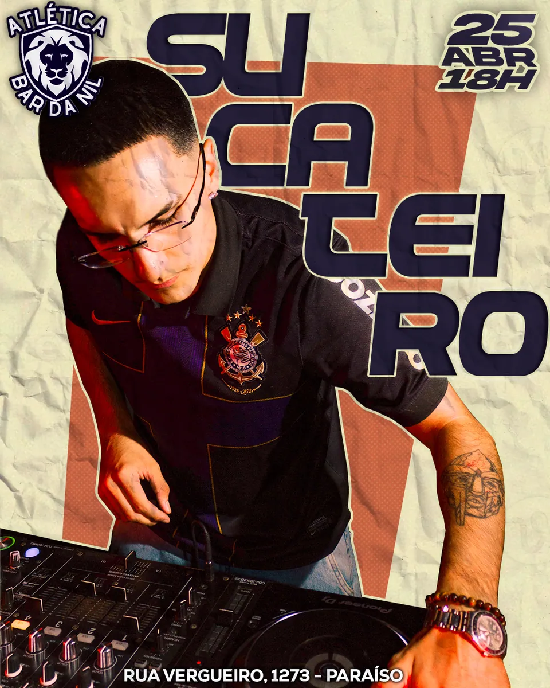
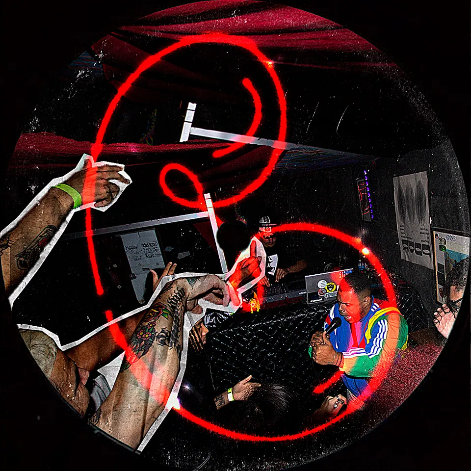

Todos os trabalhos/DJ Sucateiro
Logo e agenda de um DJ da cena.
Para o DJ Sucateiro fiz o logo em lettering agressivo, as agendas do mês com as datas e casas, e flyers de festas como o Bota Fora UNIP. O mesmo logo segura todas as peças, das fotos escuras às capas coloridas.
Logo
01
Agendas e flyers
06




Quer algo assim para a sua marca?